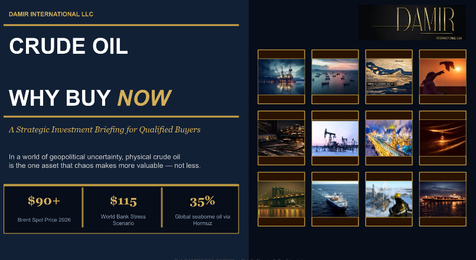

Crude oil - Why Buy Now ?
2026In an increasingly unstable geopolitical environment, physical crude oil remains one of the few strategic assets whose value strengthens under global pressure.
This briefing outlines the current macroeconomic and geopolitical dynamics shaping the oil market in 2026 - from supply disruptions and regional instability to structural inflationary pressures and tightening global production capacity.
For qualified buyers and institutional counterparts, timing, security of supply, and pricing structure have become critical strategic considerations.
